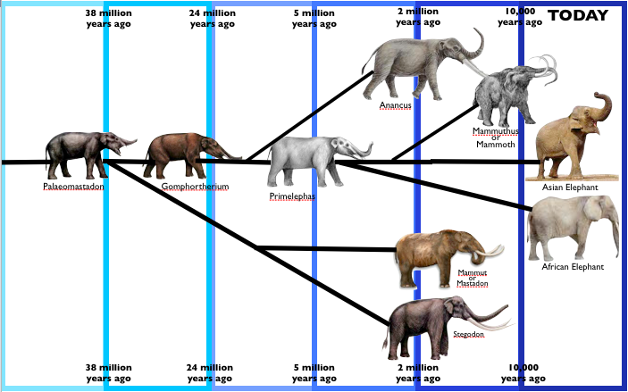

The African Elephant. Its ancestors were both the mammoth, and the anacus. Both of these animals went extinct around 2 million years ago, while the closest ancestor of the elephant(mammouth) went extinct approximately 10,000 years ago. The earliest ancestor of a modern day asian and African elephant was the Palaeomastadon, which went extinct 38 million years ago. Mammoths were present during the ice age, and due to the cold climate they were in, they developed fur which kept them warm from the brutal cold. Today's elephants are known as the largest hairless mammals on the planet. Due to the environmental pressures, elephants now live in warmer climates and fur serves no purpose whatsoever. Mutations could have occurred in the size of the trunk which enables elephants to pluck fruits and vegetables from trees. Color may be changed to blend in with the surroundings. A founder effect may have taken place where a bunch of elephants may have moved from the main herd, and formed a new species. What helps them thrive in their habitat are their big ears and wrinkly skin that helps them stay cool. In fact, have tusks made of ivory which help them eat and protect themselves. They flap their huge ears to help cool the blood in their capillaries and distribute the cooler blood throughout their body. A combination of the upper lip and nose, an African elephant's trunk is extremely versatile. These features help them as, they push over trees to get to branches and roots. This helps maintain the grasslands, and use their tusks also to dig for water, creating pools which other animals use. Elephants make loud noises with their trunks to help protect themselves. Measured around 105 dB! Lastly, elephants use their tusks to attack any specie that is a threat to them. These features help them thrive!
